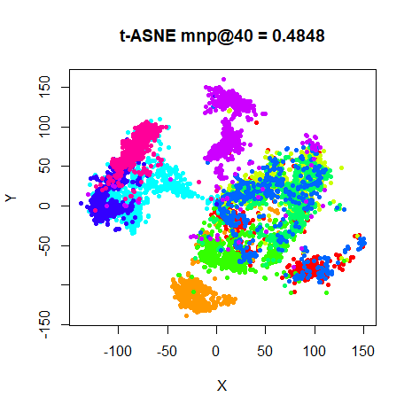
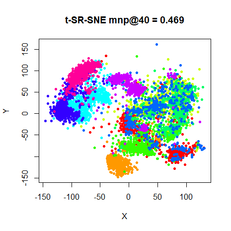
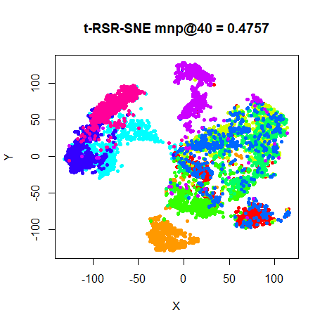
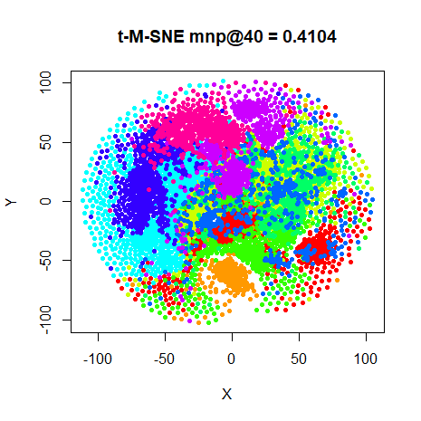
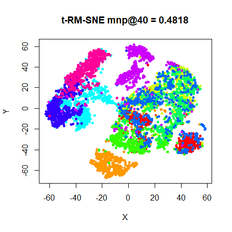
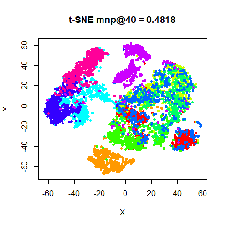

This article retains its original experiments and examples. For current package usage, see the usage guide.
Warning: this may be the most obscure and confusing document I have written yet and requires a fair degree of comfort with the exact workings of SNE to glean even the remotest of interest from it.
Normalization in t-SNE can seem oddly specific, but makes sense when considered as part of the lineage of Asymmetric SNE and Symmetric SNE (PDF). Here’s the perplexity-based procedure:
For each point i, calculate a
bandwidth for the Gaussian kernel associated with the input Euclidean
distances. Choose it so that perplexity of the resulting probability
distribution, is a user-specified value. The probabilities are defined
by normalizing all weights involving i.
Normally, I refer to this as point-wise normalization, but I’m going to
call this row-normalization in this document, because, at least in the
smallvis implementation, it leads to N probability distributions in the resulting
P matrix where every row sums to 1. In ASNE, this is all that needs doing.
For SSNE and t-SNE, a further step is carried out where these row-wise probabilities are symmetrized by averaging p_{ij} and p_{ji} and then a single probability distribution is created by normalizing over the sum of the symmetrized probabilities. Elsewhere I refer to this as pair-wise normalization, but just I’ll call this matrix-wise normalization here. By sticking with “pair-wise” and “point-wise” normalization, we would have to distinguish between the two schemes with two words that both begin with ‘P’, and things are confusing enough already.
The t-SNE paper notes that SSNE seems to produce results that are as good or better than ASNE. Results using smallvis bear that out, but the fact is that neither ASNE nor SSNE work anywhere near as well as t-SNE, so it’s a little hard to tell if there are meaningful differences between the different normalization methods.
A more interesting comparison would be between t-SNE and a t-distributed version of ASNE, which we can call t-ASNE. If there is a difference between these results, it would then be interesting to know the relative importance of the symmetrization versus the matrix normalization.
Additionally, how important is the exact steps used in the t-SNE input probability calibration? After all, we go to a lot of trouble to generate row-normalized probabilities that reflect a specific perplexity, and then we immediately destroy that structure by symmetrizing, and then creating an entirely new probability distribution based on pairs. I’ve never seen anyone worried about what the perplexity of the final matrix-normalized probability distribution is, for example, or what significance it has for the resulting topology. How important is the fact the row-normalized probabilities are used, given that they are only indirectly used in the final optimization? Maybe the row-normalized probabilities are most useful for determining a useful value for the bandwidths, in which case could we use the un-normalized weights directly, symmetrizing them and then doing the matrix normalization without converting them to the intermediate row-normalized probabilities.
Finally, if matrix normalization is superior, is there a way to modify the row-normalized probabilities so they behave more like the matrix normalization? If not, and matrix normalization is clearly superior, this might have some implications for methods like NeRV and JSE, which use the ASNE-style row-normalization.
Normalization Nomenclature
The exact order and type of symmetrization and normalization can be a bit confusing. For the purposes of this document, the names of the embedding methods, all based on t-SNE, will be renamed to t-norm-SNE, where norm is a series of letters describing the type and order of operations carried out during the normalization.
- R – row normalization: p_{ij} = v_{ij} / \sum_{k}^N v_{ik}
- M – matrix normalization: p_{ij} = v_{ij} / \sum_{k,l}^N v_{kl}
- S – symmetrization: p_{ij} = \left(v_{ij} + v_{ji} \right)/ 2
I’ve used p_{ij} as the result of the operations, and v_{ij} as the quantities that get operated on, but there’s no implication that the results of the operations are always normalized or that the quanities being operated on are un-normalized.
With the nomenclature above we can express the normalization schemes as a series of letters, which, when read left-to-right, gives the order in which they should be carried out:
Non-standard Normalization
With the ASNE and SSNE normalization schemes defined, we can now define some other normalization schemes that might help us determine the relative importance of the steps within the scheme. To stay within the basic realm of SNE, we always want to end up with a normalized P matrix (i.e. no un-normalized methods will be considered here), but we are free to mix and match various combinations of R, M and S. Some combinations are redundany however.
Ordering and Redundancy
The order of the symmetrization and matrix normalization steps don’t matter, as long as there’s no row-normalization step in between, so you could although we relabeled t-SNE as t-RSM-SNE above, we can also call it t-RMS-SNE. We therefore know we don’t ever need to consider a scheme which contains “SM” if we’ve already looked at the same scheme, but with “MS” in it.
Also, there’s no point carrying out a matrix normalization followed directly by row-normalization. So, for example, a normalization scheme like “RMR” is a waste of time as it’s the same as doing “RR”, which is clearly the same as just “R”.
With that out of the way, here are the different normalization schemes we’ll consider:
t-SR-SNE
If symmetrization is helpful in the matrix-normalized t-SNE, could it be helpful in a row-normalized version? In this scheme, we symmetrize the un-normalized weights before row-normalizing them to probabilities.
t-RSR-SNE
t-SR-SNE symmetrizes before row-normalizing, which is unlike t-SNE normalization, where the symmetrization happens after the initial row-normalization. So in this scheme, we will row-normalize and symmetrize in the order that t-SNE does it, and then instead of matrix-normalize, row-normalize again.
As an implementation notem if you were to do the matrix-normalization before the final row-normalization, i.e. carry out t-RSMR-SNE, the input probability matrix is the same as for t-RSR-SNE. The “RSM” procedure is what t-SNE does, so in terms of implementation you could leave any existing t-SNE normalization code unchanged, and then do the row-normalization at the end and get to this point.
t-RM-SNE
Here normalization is done over the entire matrix, but no symmetrization is carried out. This gives a probability matrix that should be very close to that used in t-SNE, except it’s not symmetric. The symmetrization is carried out to avoid any probabilities becoming too small during calibration, which usually results in the gradient associated with that point always being small, so that it’s easy for it to become an outlier. This method should therefore show us how bad the risk is for our test datasets, given the initialization and target perplexity values.
t-M-SNE
This method doesn’t use the row-normalized probabilities at all. It takes the un-normalized weights, and then normalizes over the entire without doing any row-normalization or symmetrization.
This gives a probabilitiy matrix with similar properties to the t-SNE probability matrix: symmetric, positive and summing to one. This decouples the method by which you generate the input weights from the conversion into probabilties. If it turns out there’s a better way to generate the input weights than the perplexity method, then we might not generate row probabilities any more. For example, sometimes a nearest neighbor adjacency matrix is used to enforce sparseness of the input matrix. If the edge of the graph are binary (i.e. 1 or 0 meaning neighbor or not, respectively), to insist on the row normalization before the symmetrization and final matrix normalization would feel a bit cargo-cultish.
But if there’s something about the row-normalization step that is vital for the performance of t-SNE, that would be good to know.
Datasets
See the Datasets page.
Evaluation
Apart from visualizing the results, the mean neighbor preservation of
the 40 closest neighbors is used to provide a rough quantification of
the quality of the result, labelled as mnp@40 in the
plots.
Settings
Here’s how to create these results (or something close to them), except for t-SR-SNE, which required me to add special code to the initialization method. Spoiler alert: given the results, I wasn’t inclined to add this complexity to the code base.
As usual, I use the iris dataset as an example.
# t-ASNE
iris_tasne <- smallvis(
iris,
scale = FALSE,
perplexity = 40,
Y_init = "spca",
method = "tasne",
ret_extra = c("dx", "dy"),
eta = 0.1,
max_iter = 2000,
epoch = 100
)
# t-SNE
iris_tsne <- smallvis(
iris,
scale = FALSE,
perplexity = 40,
Y_init = "spca",
method = "tsne",
ret_extra = c("dx", "dy"),
eta = 10,
max_iter = 2000,
epoch = 100
)
# t-RSR-SNE
iris_t_rsr_sne <- smallvis(
iris,
scale = FALSE,
perplexity = 40,
Y_init = "spca",
method = "trsrsne",
ret_extra = c("dx", "dy"),
eta = 0.1,
max_iter = 2000,
epoch = 100,
tol = 1e-8
)
# t-M-SNE
iris_t_m_sne <- smallvis(
iris,
scale = FALSE,
perplexity = 40,
Y_init = "spca",
method = "tmsne",
ret_extra = c("dx", "dy"),
eta = 10,
max_iter = 2000,
epoch = 100,
tol = 1e-8
)
# t-RM-SNE
iris_t_rm_sne <- smallvis(
iris,
scale = FALSE,
perplexity = 40,
Y_init = "spca",
method = "trmsne",
ret_extra = c("dx", "dy"),
eta = 10,
max_iter = 2000,
epoch = 100,
tol = 1e-8
)For methods where the P matrix ended
up row-normalized, optimization is noticeably harder than for ASNE or
t-SNE. I was unable to use a value of eta larger than
0.1, and results were seemed less converged after 1000
iterations. To compensate, the number of iterations was increased to
maxiter = 2000. For matrix-normalized methods,
eta = 10 worked well. The t-SNE results here use
eta = 10, max_iter = 20000 for consistency.
Results
The title of each normalization method is on the plot, using the R/S/M labelling, except for t-ASNE and t-SNE, where I have used their more expected names.
fashion
 |
 |
 |
 |
 |
 |
Based on preserving the neighborhoods defined by the
perplexity, t-ASNE does a (slightly) better job than t-SNE
on every dataset. But that just goes to show that visual inspection is
still better than relying on a number, or at any rate the mean neighbor
preservation I chose to use. Visually, t-ASNE underperforms t-SNE on
some of these datasets. All the datasets seems to show a slight crushing
of the data towards the centre of the plot. It’s nowhere near the
problem that SSNE and ASNE have, but there is a noticeably larger spread
of clusters towards the edge of the plot. This is most noticeable in
s1k and oli. The mnist plots
suffers from some outliers. There is a possibility that these points are
genuine outliers that t-SNE’s normalization ameliorates.
The results of the RM-normalization answers the question of the importance of the symmetrization definitively, at least for these datasets and this form of initialization: it doesn’t matter at all. Visually the results are indistinguishable from t-SNE. This was sufficiently surprising to me that I double-checked that the input probabilities are correctly generated and aren’t symmetric. The output coordinates are in fact slightly different from the t-SNE results, but not enough to see a visual difference in the plots. The symmetrization is therefore not important: it’s the type of normalization that makes the difference between t-SNE and t-ASNE.
The t-SR-SNE results tend to create outliers, the effect being
particularly irksome for mnist, but also noticeable with
s1k and fashion. Conclusion: don’t symmetrize
before the row-normalization.
The t-M-SNE results also give unfortunate results. Apart from also
showing a tendency to produce outliers or over-expanded clusters at the
periphery of the plot (see s1k and frey), the
larger datasets mnist and fashion look
really odd. Including symmetrization (that would be t-SM-SNE)
gives identical results (not shown), so that’s not the answer. That at
least is consistent with the results for t-RM-SNE versus t-SNE: if
matrix normalization is carried out, symmetrization neither helps nor
hinders.
t-RSR-SNE results are quite good: unlike t-ASNE, none of the results
suffer from outliers (compare s1k) or crushing in the
center (compare oli), while still resembling the t-ASNE
results more than, say, t-SNE (again look at the s1k
results). At last, here’s a result where the symmetrization actually
makes a difference and actually seems to help, at least in terms of
producing a nicer visualization.
Conclusions
First, these results underline the importance of the row-normalization step in t-SNE and all its relatives. I was surprised at how important it was: avoiding row-normalization turns out to be a bad idea no matter what else you do. Perhaps this is simply a side effect of the choice of bandwidths implicitly relying on the row-normalization when using perplexity? However, row-normalization was identified by Lee and Verleysen as one of the important features of the SNE-family of dimensionality reduction, their reasoning being that it ameliorates the effects of the change in distance distributions between the dimensionalities of the input and output space. So I shouldn’t have been that surprised.
Even UMAP and LargeVis, which eschew any form of normalization to the outputs, carry out row normalization in the input space. UMAP is even more interesting in this regard, because it doesn’t use perplexity as the basis for its normalization, although it does use something that is algorithmically quite similar: the sum of each row of the input matrix must equal \log_{2} k where k is the number of nearest neighbors desired.
Second, the difference between t-ASNE and t-SNE is much clearer than for ASNE versus SSNE. While neighborhood preservation values are a little bit higher for t-ASNE, if your goal with these methods is simply visualization of any natural clustering in your data, t-SNE provides better results, with less outliers and it’s much easier to optimize. While no-one actually uses t-ASNE in the literature, there are methods that are very close to it. Specifically, inhomogeneous t-SNE, NeRV and JSE use the row-normalization method also and can be seen as generalizations of ASNE (or t-ASNE in the case of the inhomogeneous t-SNE). Although the JSE paper says that the two different forms of normalization has “no significant effect”, it might be worth double checking that given the results here.
Third, symmetrization does seem to help when row-normalizing. For matrix-normalized results, it doesn’t seem required for any of the datasets used here: both the good t-SNE and bad t-M-SNE results are unaffected by the presence or absence of the symmetrization step. But having a symmetric non-negative probabilty matrix has some nice theoretical properties (see for instance the Spectral Directions paper), so you may as well do it in the matrix-normalized case too.
Fourth, none of the variations on normalization improved on the existing methods, except that the RSR normalization might have potential.
I also implemented a version of the RSR normalization for ASNE and compared to the ASNE and SSNE results on the same datasets. Results are not shown because there was no interesting differences from the ASNE and SSNE results. Like the the results here with the t-distributed kernel, the RSR-ASNE results are similar to the ASNE results. As there wasn’t much of a difference between ASNE and SSNE, and no outlier issues, there’s no particularly pressing reason to adopt such a normalization in that case.
Finally, some questions I should get around to answering. These may end up being added to this document or being written about elsewhere. For now, let us ponder them together:
Is it really the row-normalization that’s important, or is it just that it rescales the input weights usefully?
What exactly does symmetrization do that helps when row-normalizing, that doesn’t matter when matrix-normalizing?
Although ASNE doesn’t seem to benefit from RSR normalization, given that JSE and NeRV carry out row-normalization, and they can be both trickier to optimize than t-SNE and produce less pleasing visualizations, would the RSR normalization help them in the way t-ASNE was improved?
For un-normalized methods (Elastic Embedding, LargeVis, UMAP), how important is symmetrization?
What about alternative symmetrization methods to arithmetic averaging?
Acknowledgement
My original thinking on these matters bundled matrix-normalization and row-normalization together, and therefore downplayed the importance of row-normalization, particularly due to the lack of any normalization in the output space carried out by UMAP and LargeVis. My thanks to Dmitry Kobak, who convinced me that I had got things completely backwards: row-normalization of inputs is in fact a key step in these methods (including UMAP and LargeVis), and consistent with the findings of Lee and Verleysen. I have re-written the conclusions to reflect this.